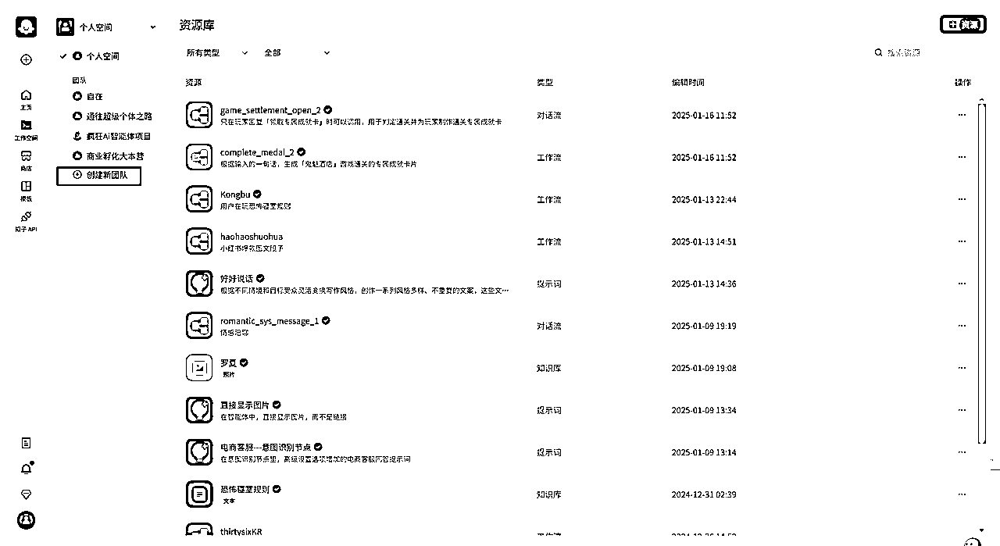
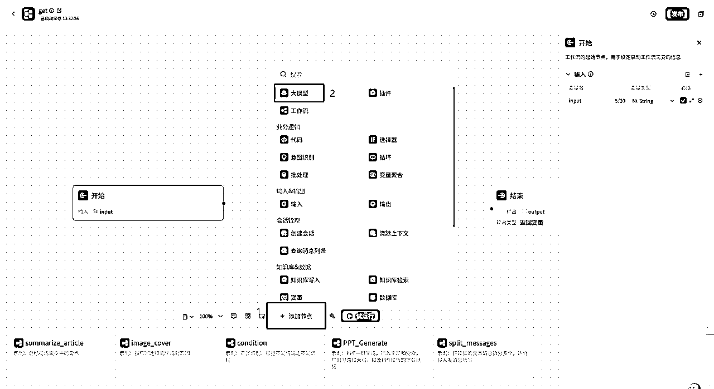

来源：https://mb8jo3jay5.feishu.cn/docx/DIGpdAqamotQeOx2wQPcnb6cnKf
最近在帮一个客户做智能体，他们的面向大学生和社会工作者的英语APP参加了鸿蒙的一个应用大赛，已经进入决赛，想要在APP里增加更多AI方面的创意，请教大家有没有更好的想法啊，一起交流，一起参与，目前是做了剧本杀智能体放进APP里。
为了感谢大家，我和合伙人出了一篇制作新年春联生成器的拆解，和大家一起交流，可以修改内容，用在很多地方
工作流：想要一键生成对联图片
1、用户输入内容
2、根据内容直接作为横批，或者以此为主题创作
3、直接出图，用到画板功能
国内：https://www.coze.cn/
国外：https://www.coze.com/
国内版的扣子可以用国内的大模型，国外版的扣子可以用国外的大模型，正常我们用国内版的就行
这是主页
主页有官方的教程，主页下面是工作空间，刚使用是只有个人空间，然后我们可以创建团队空间，在团队空间，可以协同做一个智能体，资源也可以共享

点击创建新团队就可以了
商店里是别人做好的，还是扣子官方制作的
模板是可以复制的智能体，里面的工作流也可以复制，有扣子官方做的是免费的，有其他人做的，可以设置免费或者收费
其他的都很简单，大家直接点进去就明白了，我们直接进入主题
点击右上角的+，会有两个，一个是创建智能体，一个是创建应用，应用你可以简单的理解，画面更美观，可以随意排版页面。如果我们刚开始不熟悉，直接从创建智能体开始
创建好以后，就来到了这个页面
其他先不用管，点这里添加工作流
点创建工作流，下面还有你之前发布过的资源库工作流，如果你在团队空间做，团队里其他人做的工作流也可以直接用，再下面还有官方示例，很方便。
点完创建工作流后，显示有两个，这里我们用工作流
然后输入工作流名字，要用英文，输入不对，会有提示，在描述里写具体描述，一是让大模型更好理解，二是等以后做的多了，通过介绍就知道这个工作流是干嘛用的
接着来到工作流页面，固定的有两个节点，一是开始节点，是用户输入的内容，最后一个是结束节点，是智能体最后的输出，最下面是扣子新出的工作流模板，点击后直接使用，注意各节点之间要用线连接起来，直接点那个蓝色的小点就可以连接了。
下面我们开始做第一个节点
点击开始节点，右边就会显示，开始节点需要配置的内容
变量名：input（这里你可以输入其他内容，但必须是英文，表示用户输入的内容）
变量类型：string
对变量类型不理解的可以看下哔哩哔哩这个视频：https://www.bilibili.com/video/BV1cS421d7Lo?spm_id_from=333.788.videopod.episodes&vd_source=2fbc07ca9d77406a24df42e65c625454&p=21
点击下面的“添加节点”，选择大模型，和开始节点连接起来，

选择大模型，开始配置
最上面是单次处理和批处理。单次就是大模型一次只处理一个信息，比如我们要提取视频连接内容，只能发给智能体一条链接，如果选择批处理，就可以设置成，一次性发多条链接，大模型也可以同时处理，这里我们用单次。
然后在模型里，我们可以选择想要的模型，对应的都有介绍。
在技能里，可以添加插件，让大模型调用各种能力，注意，在刚打开的智能体页面，也可以添加插件，我测试下来，插件放在大模型里，会更稳定。
在“输入”里，点那个设置按钮，选择开始节点，选择我们刚才输入的input，表示大模型接受的信息是从开始节点的input来的
然后配置系统提示词，下面还有个用户提示词，系统提示词一般是指给大模型设置一个角色，比如医生，而用户提示词是向这个医生说明具体的病情。这里我们只要系统提示词就行。
系统提示词：
# 角色
你是一个擅长对联创作的人工智能助手。能够根据各种主题撰写平仄合理、对仗工整、文字优美且内容喜庆祥和的对联。
# 任务
请你根据用户输入的创作主题{{input}}创作一副对联。要求：
创作要求：
你是一个能根据特定主题创作对联的人工智能助手。所撰写的对联内容紧扣主题，平仄合理且对仗工整，上联以仄音收尾，下联以平音收尾，整体风格喜庆祥和，字数相等，结构对称，既可典雅也可通俗，富有深意，简洁有力。
1，上下联是7个字，横批是四个字。
2，在duilain字段输出对联内容，格式为：
上联：
下联：
横批：
然后请你在up输出上联文字内容，不要包含其他信息。
然后请你在down输出上联文字内容，不要包含其他信息。
然后请你在hp输出上联文字内容，不要包含其他信息。
在输出里写：
up： 上联
down：下联
hp：横批
duilian：完整对联
在输出节点，点设置按钮，选择大模型，选择duilian
在输出内容里，写上提示词
提示词：
好的～💡
根据您的要求，我写了一副对子：
{{output}}
接下来给您配一张图，请稍等片刻
{{output}}，这个是按shift键，＋大括号，显示颜色是蓝色的才对
然后再添加画版节点，和上一个节点连接起来，
点击画板，点击＋号，添加元素
这里输入的变量名，要和前面写的名字一样，元素值引用大模型里内容，也要一一对应上
然后双击右侧“画板编辑”里空白处，或者点那个放大，开始编辑画板，素材给你们准备好了
最后是结束节点，选择返回文本，参数名：image，参数值引用画板节点的date
提示词：根据你的需求，为你生成的对联图片如下：![]{{image}}，这个Markdown语法格式，是确保直接在智能体中显示图片，不写这个格式，会只出来图片链接，需要再点击链接才能显示图片
发布之前，一定要试运行，看看有没有报错
右上角点击发布

填写版本号和版本描述
编排人设与回复逻辑，下面有提示词库，可以储存你的提示词和官方的模板，自己写完提示词，还可以直接点优化,也可以再次修改智能体名字
根据用户输入，调用工作流 {}
添加开场白，预设问题，背景图片，语音等
设置一个主页背景图片 可以是生成好的春联
发布前进行一下测试 确保正常运行
最后点击发布 发布记录可以一键生成 发布平台按需选择就行
可以愉快玩耍了